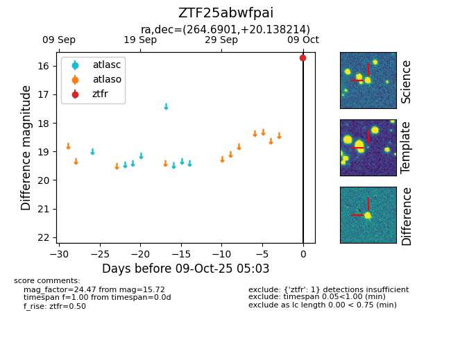

FINK: ZTF25abwfpai
Lasair: ZTF25abwfpai
ALeRCE: ZTF25abwfpai
ZTF25abwfpai (ztf,fink)
equatorial (ra, dec) = (264.6901,+20.13821)
galactic (l, b) = (43.9021,+24.67972)

last ztfr=15.72
1 ztfr detections